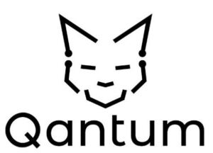

Trade Mark Journal No.2025/045 7 November 2025
WO0000001882076 (9,41,42)
Office of origin: France
Date of International Registration:3 September 2025
Date of designation in the UK:
3 September 2025

- Class 9
- Accounting software; software and applications relating to taxes, accounting, book-keeping, finance, business administration and business management; downloadable software and software applications for accounting, book-keeping, tax compliance, and financial and commercial administration and management; downloadable software and software applications for scanning documents, invoices and receipts; downloadable software and software applications for financial transactions, payments and payment processing and administration; downloadable software and software applications for expense management and monitoring; downloadable software and software applications for accounts auditing and finance; software for the extraction, collecting, import, compilation, processing, calculation, analysis, validation, checking, management, reporting and presentation of information and data; machine learning software; software for the extraction, collecting, import, compilation, processing, calculation, analysis, validation, checking, management, reporting and presentation of tax, accounting, financial and commercial information and data; tax software; tax compliance software; tax declaration preparation and filing software; downloadable software and software applications for electronic signature; downloadable electronic publications, reports and media content relating to taxes, accounting, book-keeping, finance, business administration and business management; computer software; downloadable software applications; application software; all the aforesaid goods only in relation to auditing and accounting and not in relation to real estate, construction, investment services, financial advice, investment funds and/or wealth management.
- Class 41
- Education and training services relating to software, taxes, accounting and business; training courses relating to software, taxes, accounting and business; provision of electronic publications, electronic reports and non-downloadable electronic media content relating to taxes, accounting, book-keeping, finance, business administration and business management; all the aforesaid services only in relation to auditing and accounting and not in relation to real estate, construction, investment services, financial advice, investment funds and/or wealth management.
- Class 42
- Software as a service relating to taxes, accounting, book-keeping, finance, business administration and business management; software as a service for accounting, book-keeping, tax compliance and financial and commercial administration; software as a service for aggregating, processing and integrating data and information; software as a service for tax declaration preparation and filing; software as a service for scanning documents, invoices and receipts; software as a service for financial transactions, payments and payment processing and administration; software as a service for expense management and monitoring; software as a service for accounts auditing and finance; software as a service for the extraction, collecting, importing, compiling, processing, calculation, analysis, validation, checking, management, reporting and presentation of information and data; software as a service for the extraction, collecting, importing, compilation, processing, calculation, analysis, validation, checking, management, reporting and presentation of tax, accounting, financial and commercial information and data; software as a service for electronic signature; provision of an online non-downloadable software; provision of online non-downloadable software relating to taxes, accounting, book-keeping, finance, business administration and business management; provision of online non-downloadable software for accounting, book-keeping, tax compliance and financial and commercial administration; provision of online non-downloadable software for aggregating, processing and integrating data and information; provision of online non-downloadable software for tax declaration preparation and filing; provision of online non-downloadable software for scanning documents, invoices and receipts; provision of online non-downloadable software for financial transactions, payments and payment processing and administration; provision of online non-downloadable software for expense management and monitoring; provision of online non-downloadable software for accounts auditing and finance; provision of online non-downloadable software for the extraction, collecting, importing, compilation, processing, calculation, analysis, validation, checking, management, reporting and presentation of information and data; provision of online non-downloadable software for the extraction, collecting, importing, compilation, processing, calculation, analysis, validation, checking, management, reporting and presentation of tax, accounting, financial and commercial information and data; provision of online non-downloadable software for electronic signature; provision of software via a global computer network; provision of temporary use of non-downloadable web-based software; providing artificial-intelligence computer programs on data networks; technical analysis of data; software design, development, installation, modification, updating, integration and maintenance; hosting services, software as a service, and rental of software; server hosting; website hosting; hosting of websites; hosting of databases; hosting of web portals; hosting of digital content; hosting of computer software applications for others; hosting of platforms on the Internet; cloud hosting provider services; information technology and computer services for the extraction, collecting, import, compilation, processing, calculation, analysis, validation, checking, management, reporting and presentation of information and data; computerized analysis of technical data; data duplication and conversion services; conversion of physical data and documents into electronic media format; conversion of data or documents from physical to electronic media; scanning of documents, invoices and receipts; electronic storage of data and documents; information technology support services; technical support services for computer software; support and maintenance services for computer software; provision of online support services for users of computer programs; software information, advisory and consultation services; software as a service; all the aforesaid services only in relation to auditing and accounting and not in relation to real estate, construction, investment services, financial advice, investment funds and/or wealth management.
QANTUM
Representative: Monsieur MORTREUX Guillaume IPSIDE (SANTARELLI GROUP), Tour TRINITY,, 1 BIS ESPLANADE DE LA DEFENSE,, CS 60356, F-92035 PARIS LA DEFENSE CEDEX, FRANCE